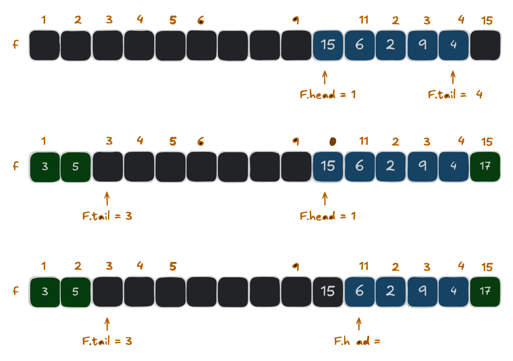

Developing DS learning Basics II

Dynamic Data Structures
Summary
In this type of data structure, the dimension is not fixed and can be updated during operation time, taking into account memory efficiency and code complexity.
Queues
In a queue, the first one in is the first one out, implementing the *first-in, first-or* or *FIFO* policy.The operation to insert a queue is *Enqueue* and the operation to delete it is *Dequeue*.
The example above is a circular queue with a fixed, circular size, meaning that when we reach the end of the array, we return to the beginning, if there is space available The implementation uses an array $Q\left[1...15\right]$. The elements of the row appear only in the lightly shaded positions. The first row has 5 elements, located at $Q\left[10...14\right]$. The second row below is the new configuration after the calls ENQUEUE $Q\left(17\right)$, ENQUEUE $Q\left(3\right)$ and ENQUEUE $Q\left(5\right)$. The third and final one is the configuration of the queue after calling DEQUEUE.$Q\left(15\right)$, which was previously the head of the queue and the new head has the key 6. For this “Queue” class, let's first define that it is an array, its maximum size, the indexes of *head* and *tail* and the current size of the queue.
def __init__(self, capacity):
self.capacity = capacity
self.fila = [None] * capacity
self.head = 0
self.tail = 0
self.tamanho = 0
Next, let's define that our queue is empty
def empty(self):
return self.size == 0
And another definition that it will be full.
def full(self):
return self.size == self.capacity
Next we will define the main operations of our queue and first we will do the *Enqueue* which will insert the element in the *tail* position and increment it by one element, increasing the queue.
def enqueue(self, element):
if self.cheia():
print(“Error: The queue is full”)
else:
self.queue[self.tail] = element
self.tail = (self.tail + 1) % self.capacity
self.size += 1
print(f“Element {element} added to queue.”)
To define the *Dequeue* function we need to get the element from the *head* position and remove it, from there we pass the position to the next element and decrease the queue.
def dequeue(self):
if self.empty():
print(“Error: Queue is empty”)
else:
element = self.queue[self.head]
self.queue[self.head] = None
self.head = (self.head + 1) % self.capacity
self.size -= 1
print(f“Element {element} removed from queue.”)
return element
The next step will be to define a function to show the actions being performed
def show(self):
if self.empty():
print(“Empty queue”)
else:
print(“Current queue:”)
i = self.head
for _ in range(self.size):
print(self.queue[i], end=” ”)
i = (i + 1) % self.capacity
print()
Finally, let's implement our queue with an array $Q\left[1...15\right]$
queue = Queue(5)
The Enqueue will be done by adding the desired number
queue.enqueue(15)
queue.enqueue(6)
queue.enqueue(2)
queue.enqueue(9)
queue.enqueue(4)
Click here to see result
Element 15 added to queue.
Element 6 added to queue.
Element 2 added to queue.
Element 9 added to queue.
Element 4 added to queue.
Current queue:
15 6 2 9 4
And we can ask it to show our queue:
queue.show()
Click here to see result
Current queue:
15 6 2 9 4
At this point with tail and head* defined our Dequeue can follow the “first-in, first-out” policy.
queue.dequeue()
queue.show()
Click here to see result
Element 15 removed from queue.
Current queue:
6 2 9 4
Stacks
In the stack, the last one in (Push) is the first one out (Pop), implementing the last-in, first-out or LIFO policy. The insertion operation on the stack is commonly known as PUSH and the deletion operation as POP, alluding to physical stacks such as the stack of plates, where the order in which a plate is removed (POP) from the stack is inverse to the order in which it was placed (PUSH) on the stack, because only the top one is accessible.
In the example we have the implementation of an array of an “S” Stack with 4 initial elements $S\left[1...\text{S.top} \right]$. When $S.top=0$ our stack is empty. The top element is 9, then two “Push” calls are made, (S,17) and (S,3), giving the stack 6 elements and finally a “POP” call is made, removing (S,3) and leaving (S.17) as the last element of the stack. To implement a “Stack” class of this array in python, we first define the array to store the elements, the maximum size of the stack and indicate the top of the stack, the “-1” indicates that the stack is empty.
def __init__(self, capacity):
self.capacity = capacity
self.stack = [None] * capacity
self.top = -1
Then we define the empty array:
def empty(self):
return self.top == -1
Also, let's define when our stack will be full.
def full(self):
return self.top == self.capacity - 1
Once this is done, let's define the main functions. For the Push function, we'll work with incrementing at the top and inserting the element at the top of the stack;
def push(self, element):
if self.full():
print("Error: The stack is full")
else:
self.top += 1
self.stack[self.top] = element
print(f"Element {element} added to the top {self.top}")
In the POP function, we take the top element, remove an element and decrement the top.
def pop(self):
if self.empty():
print("Error: The stack is empty")
else:
element = self.stack[self.top]
self.stack[self.top] = None
self.top -= 1
print(f"Element {element} removed from top {self.top + 1}")
return element
We have also defined a function to show our actions and display them.
def show(self):
if self.empty():
print("Empty stack")
else:
print("Current stack state:")
for i in range(self.top + 1):
print(f"Position {i + 1}: {self.stack[i]}")
The next step will be to implement it in our example where we have an Array S={15,6,2,9}
with a capacity of 7 positions.
capacity = 7
stack = Stack(capacity)
To do the push we just need to add the desired number
stack.push(15)
stack.push(6)
stack.push(2)
stack.push(9)
stack.show()
Click here to see result
Current stack state:
Position 1: 15
Position 2: 6
Position 3: 2
Position 4: 9
To make the pop, as we're on a stack and “last-in first-out”, we don't need to specify who we're going to delete
stack.pop()
stack.show()
Click here to see result
Element 9 removed from top 3
Current stack state:
Position 1: 15
Position 2: 6
Position 3: 2
Linked Lists
A linked list is a type of data structure in which the elements are not stored in a contiguous location, but are linked together using pointers. It forms a series of connected nodes, each of which stores data and the address of the next node.
A linked list typically consists of two components
- Data: which holds the current value or data associated with the node.
- Next pointer or Reference: which stores the memory address of the next node in the sequence.
They have head and tail, i.e. they are accessed by the *head*, which points to the first node in the list. The last node in the list points to a Null or nullptr element, indicating the end of the list, this node is known as a tail node. The reason it's preferable to use linked lists rather than an array is because it's easier to insert and delete.
Singly linked list
In a singly linked list, each node has a reference to the next node in the sequence. Passing is done in a direct direction. Let's use everyday tasks as examples:
Each node represents a task for the day and the arrows on the nodes represent the order of the tasks. The start of the day is *head* which points to the first task of the day and the end of the day is *null*. With practical applications in mind, there is flexibility because it is easy to add and remove tasks at any point in the day, yet the tasks follow a natural order, reflecting the structure of the linked list.
Without thinking about insertions or additions, we can implement our DailyRoutine as follows: We need to create a class for the Tasks node, which will have the task of the day the pointer to the next task:
In the POP function, we take the top element, remove an element and decrement the top.
class Task:
def __init__(self, name):
self.name = name
self.next = None
Now let's create our Daily Routine class in which we'll manage the sequence of tasks.
class DailyRoutine:
def __init__(self):
self.start = None
Within this class we are going to define two functions and the first
is the creation of tasks and the connection between them, note that in
the connection we have the name of the task and the pointer nameTask.pointer>:
def create_task(self):
# Create the tasks
start_of_day = Task("Start of day")
wake_up = Task("Wake up")
drink_coffee = Task("Drink coffee")
meeting = Task("Meeting")
lunch = Task("Lunch")
# Connect the tasks
self.start = start_of_day
start_of_day.next = wake_up
wake_up.next = drink_coffee
drink_coffee.next = meeting
meeting.next = lunch
The second definition to be made will be the action of showing the tasks
def show_task(self):
current_task = self.start
while current_task:
print(current_task.name)
if current_task.next:
print("|")
current_task = current_task.next
This can be implemented with the commands below:
routine = DailyRoutine()
routine.create_task()
routine.show_task()
As I said about flexibility, we can implement the action of adding a task. I won't worry about its position, we'll just add it
def add_task(self, task_name):
new_task = Task(task_name)
if self.start is None:
self.start = new_task
else:
current_task = self.start
while current_task.next:
current_task = current_task.next
current_task.next = new_task
print("\n>> Adding new task 'Exercise'")
routine.add_task("Exercise")
print("\n")
routine.show_task()
Click here to see result
>> Adding new task 'Exercise'
Start of day
|
Wake up
|
Drink coffee
|
Meeting
|
Lunch
|
Exercise
Doubly linked list
References
1. Thomas H. Cormen, Charles E. Leiserson, Ronald L. Rivest, and Clifford Stein. Introduction to Algorithms, Third Edition (3rd. ed.). The MIT Press, 2009.
2. GONZAGA DE OLIVEIRA, S. L. Algoritmos e seus fundamentos. Lavras: Editora UFLA, 2011.
3. SZWARCFITER, Jayme L.; MARKENZON, Lilian. Estruturas de Dados e Seus Algoritmos. Rio de Janeiro: LTC, 2010. E-book. ISBN 978-85-216-2995-5.